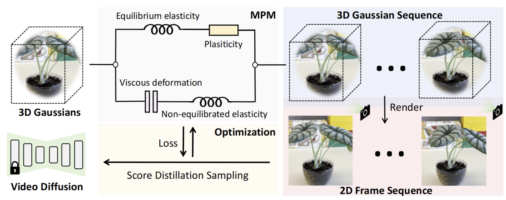
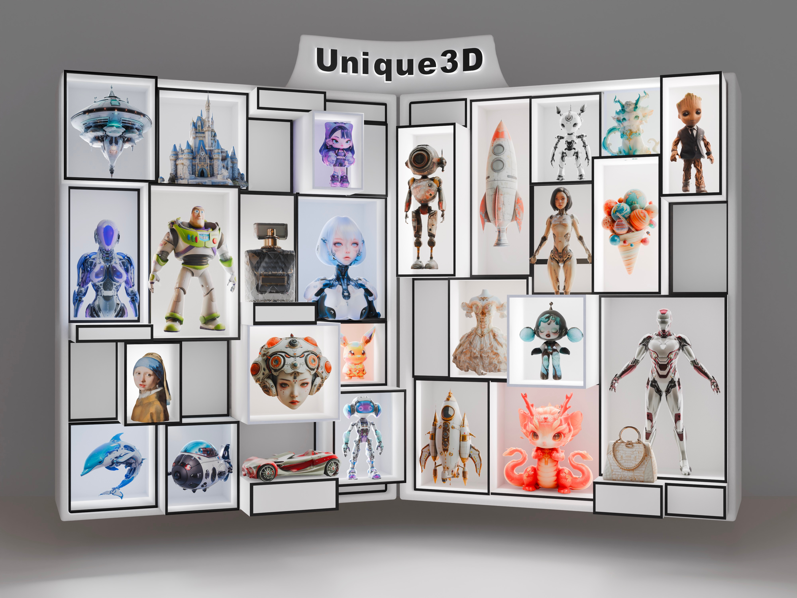

|
Hanyang Wang | 汪晗阳 I'm currently an undergraduate student in the Department of Computer Science and Technology at Tsinghua University. My research interests lie in 3D Computer Vision and AIGC. |
{kind=link}
Research
* indicates equal contribution |
|  |
Fangfu Liu*, Hanyang Wang* Shunyu Yao , Shengjun Zhang, Jie Zhou, Yueqi Duan Arxiv, 2024 [arXiv] [Code] [Project Page] In this paper, we propose Physics3D, a novel method for learning various physical properties of 3D objects through a video diffusion model. Our approach involves designing a highly generalizable physical simulation system based on a viscoelastic material model, which enables us to simulate a wide range of materials with high-fidelity capabilities. |
|  |
Kailu Wu , Fangfu Liu, Zhihan Cai, Runjie Yan, Hanyang Wang, Yating Hu, Qixiu Li, Yueqi Duan , Kaisheng Ma Arxiv, 2024 [arXiv] [Code] [Project Page] In this work, we introduce Unique3D, a novel image-to-3D framework for efficiently generating high-quality 3D meshes from single-view images, featuring state-of-the-art generation fidelity and strong generalizability. Unique3D can generate a high-fidelity textured mesh from a single orthogonal RGB image of any object in under 30 seconds. |

|
Fangfu Liu, Hanyang Wang, Weiliang Chen, Haowen Sun, Yueqi Duan Arxiv, 2024 [arXiv] [Code] [Project Page] We introduce a novel 3D customization method, dubbed Make-Your-3D that can personalize high-fidelity and consistent 3D content from only a single image of a subject with text description within 5 minutes. |
|
|